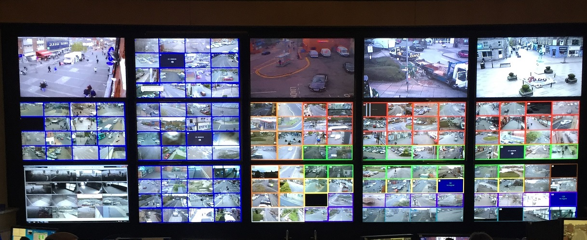
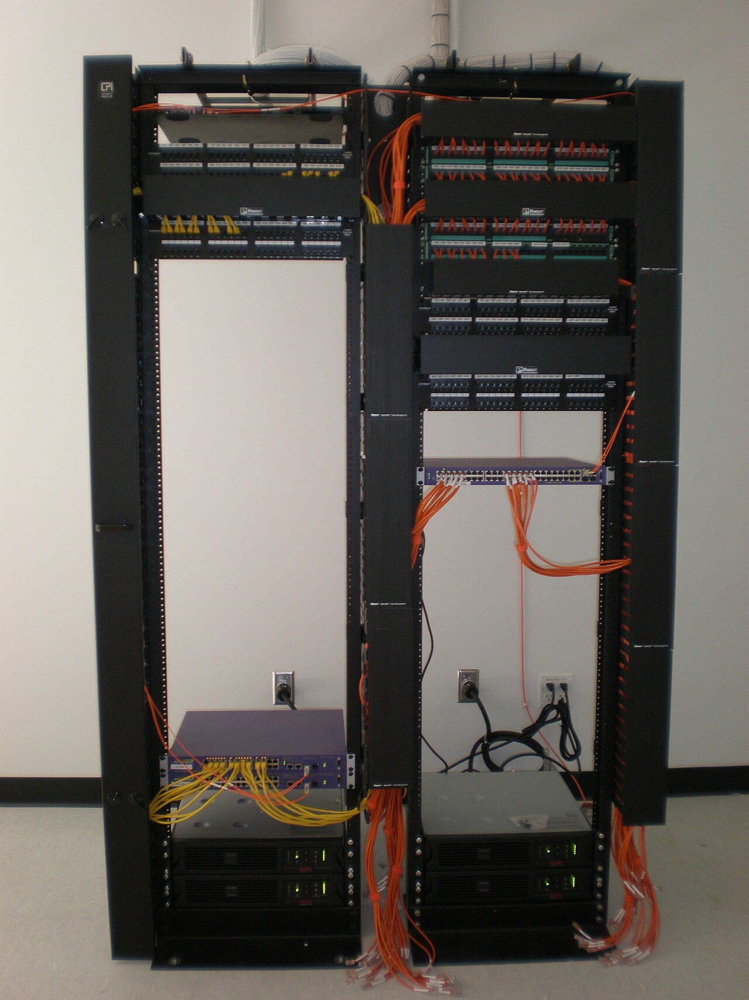
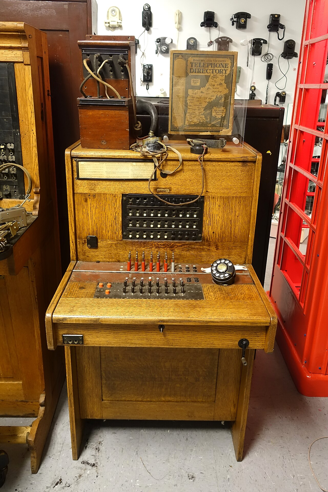
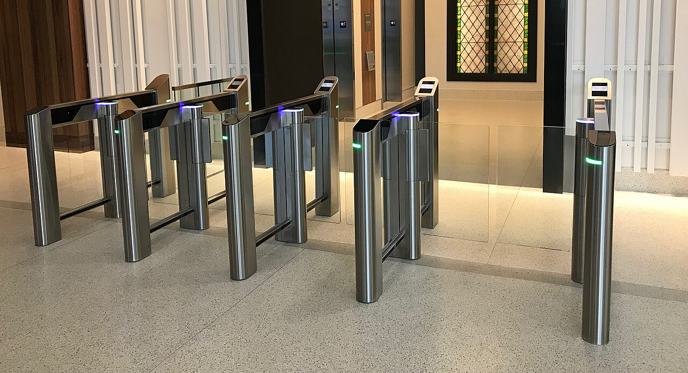
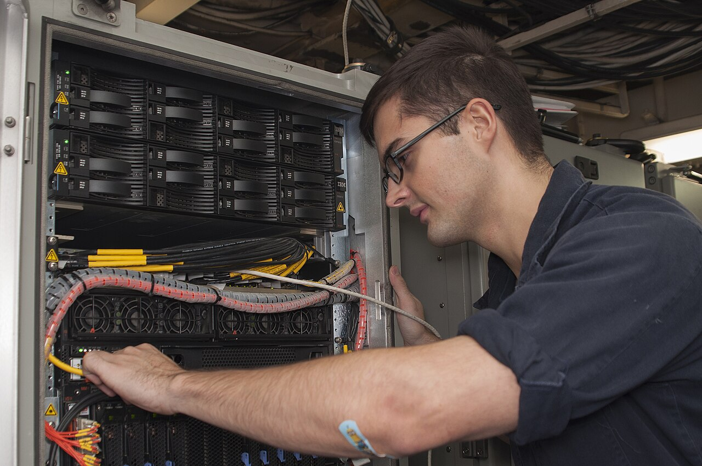

System Integration Services
Professional technology solutions delivered with end-to-end engineering: physical cabling, calibrated equipment setup, system software backups, and ongoing operational maintenance.
CCTV & Video Surveillance Integration
Effective video surveillance requires more than mounting cameras on walls. It involves optical range calculations, lighting adjustments, dedicated bandwidth management, and secure multi-channel recording setups that maintain high retention rates without choking the local network.
What the service involves:
Site survey, selection of suitable dome or bullet camera optics, installation of Cat6/coaxial structured cabling, deployment of multi-channel NVR/DVR storage arrays, PoE switch allocation, and setup of operator monitoring stations.
Problems this addresses:
Blind spots across campus perimeters, unmonitored entry gates, video loss during critical incidents, insufficient recording storage, and disorganized camera feeds.


Networking Infrastructure & Wi-Fi
Every modern technological system—from IP cameras to biometric attendance—relies on a stable data backbone. Nevus Infocom designs and deploys structured networking that ensures clean signal distribution, segregated traffic, and reliable uptime.
What the service involves:
Cat6/fiber optic cable routing, patch panel termination, installation of Layer 2/3 managed switches, router gateway provisioning, VLAN segmentation, and enterprise Wi-Fi 6 access point distribution.
Problems this addresses:
Tangled cables in server closets, frequent network drops, video stream latency, Wi-Fi dead zones, and security risks caused by unsegmented network traffic.
EPABX & Communication Systems
Instant, clear internal communication is fundamental to day-to-day operations. We implement digital and IP-based EPABX systems that connect staff, departments, reception desks, and security gates without recurring call toll expenses.
What the service involves:
EPABX server integration, extension cabling, distribution frames (MDF), executive keyphone programming, call-forwarding rules, auto-attendant configuration, and intercom handset installations.
Problems this addresses:
Communication delays between administration and field personnel, lack of intercom reaching security outposts, missed customer inquiries, and unorganized internal phone routing.


Biometric Access & Attendance Systems
Secure physical access and accurate attendance logs are crucial for organizational governance. We integrate biometric fingerprint and facial verification devices paired with electronic locks and software reporting.
What the service involves:
Terminal mounting, wiring of electromagnetic locks and push-to-exit buttons, controller integration, attendance software synchronization, and database configuration.
Problems this addresses:
Unauthorized entry into sensitive rooms, manual proxy attendance ("buddy punching"), lost physical keys, and inaccurate payroll time tracking.
Audio-Visual & Digital Signage Solutions
From emergency public address (PA) announcements to dynamic digital display boards in auditoriums, we connect media distribution systems to keep campuses and facilities informed.
What the service involves:
PA amplifier installation, zone-selector configuration, ceiling/horn speaker cabling, commercial digital display mounting, and media player distribution setups.
Problems this addresses:
Inaudible campus-wide emergency notices, outdated printed paper noticeboards, and poor audio coverage in large assembly halls or foyers.

System Installation, Software Backups & Servicing
Hardware integration is incomplete without disciplined operational continuity. Nevus Infocom ensures your systems remain serviceable through structured installation, neat enclosure assembly, and rigorous software backup routines.
What the service involves:
Server rack mounting, wire dressing, creating baseline snapshots of switch configurations, NVR recording settings, PBX dial plans, scheduled preventative maintenance visits, and firmware audits.
Problems this addresses:
Configuration amnesia after power spikes, lost system settings during equipment swaps, unserviced dusty fans causing hardware failure, and prolonged downtime during repairs.
Have a Complex System Integration Requirement?
Talk to our team about conducting a site inspection and preparing an integration proposal for your educational campus or commercial facility.